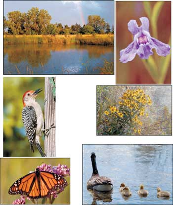
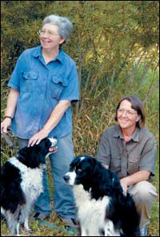
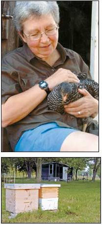
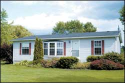

Find the strength of your land and let it work for you: This has been our philosophy on our 12 acres, located on the edge of Lake Erie’s Sandusky Bay. We decided to move to this land in Port Clinton, Ohio, almost 20 years ago. It belonged to the parents of my partner, Robin Arnold, and they generously deeded two acres to us, including a site for a house and a pond that Robin’s grandfather dug many years ago. We started with a mobile home, but then several years later replaced it with a modular home - nothing fancy just a little nicer, and we started to get interested in back-to-the-land living. When the time was right, we thought, we would like to buy a few acres and find a productive use for them.
When we first moved here, a farmer was renting the rest of the property from Robin’s father and trying to grow soybeans. Each year he planted, and each year he lost more than half the crop to flooding; he made his money off the insurance from the loss. Eventually, the construction of a dike reduced the flooding problem, but the property still wasn’t good farmland. The soil was a heavy clay that dried hard as concrete. When wet, the sticky clay clung to the bottom of our shoes like lead weights.
A few years ago, Robin’s parents decided to get rid of the farmer, which left 10 acres of land right in our back yard. We discussed whether we should wait and try to find a place that was a little more promising. After all, when we first moved here, we often had to put on knee-high rubber boots to go more than 20 feet out into the back yard where, once, we found 3- to 4-pound carp swimming around our feet! Although our yard doesn’t flood like it once did, the 10 acres we were thinking about buying frequently have standing water, especially in the spring.
But we weren’t searching for the perfect piece of farmland, either, and so about three years ago, after much discussion, we bought the 10 additional acres from Robin’s parents, and we waited to see what the land would tell us.
We didn’t have to wait long. Left alone, the land began to revert to its natural state. Marsh grasses, wild flowers and dogwood filled in the once-manicured bean fields. Trees have begun to appear as if by magic - not hand-selected trees from nurseries, but species native to the area whose seeds were borne on the wind from surrounding woods.
Our land now offers cover and safe haven to many animal species. At first, we saw only a few small animals - muskrats, mink, rabbits and birds. Before long, we saw an occasional deer; and then, one afternoon, we counted 22 in our back field! Migrating birds that once bypassed the cultivated fields now stopped to rest for a day or two in the tangled underbrush before beginning the final leg of their journey across Lake Erie to Canada and beyond.
The pond has become a wonderful spot for watching Canada geese. One family of geese spent an entire spring and summer with us, sharing the shade of the maple tree on the pond bank during hot summer afternoons. The parents raised their babies on the edge of the pond, and during nice evenings we would eat supper on the swing under the tree and watch them play on the water. One evening as we set our plates on the low bench in front of the swing, the whole family filed past, picked leftovers off our plates and then lay down on the grass around us.
One day in late August, after the last goose finished molting, we heard a commotion coming from the pond - and we ran out in time to see the whole family fly away. They circled once overhead, honking. A day or two later they stopped back to say “goodbye” and spent one more afternoon with us. Then they left for good. Sadly, we watched them leave and wished them a safe journey.
As much as we enjoy the land for the beauty it offers us, we still wanted to do something productive with it, at least on a small scale. From the beginning, we knew that whatever we did on the farm would have to work with the “temperament” of the property.
Almost immediately, we discovered one way that our land was useful: Robin has been pursuing her interest in nature photography. Now, instead of getting into the car and driving for an hour or so to a park, all she has to do is step out the backdoor. She has upgraded her camera gear and started selling her photos.
In addition to photography, both of us spent numerous hours reading everything we could find on small-scale farming, chickens, bees, canning - you name it. Finally, we purchased a walk-behind tiller and decided to plant a small vegetable garden to see what grows best in this type of soil.
During the next few years, we plan to plant enough for ourselves and our families to eat, and a little extra to sell. We already know asparagus is a good possibility - Robin’s grandfather started an asparagus bed on this farm years ago that still produces. We also have researched different types of fruit trees - apples, peaches and pears should do well in this type of soil, and we have planted some of each. Along with this, we are raising a few chickens for eggs, and we have four beehives.
Robin does most of the hive maintenance and honey collection. We usually harvest two honey crops: one in the summer and one in the fall. Since we don’t have a centrifuge to spin the honey out of the combs, we produce “cut-comb honey,” or honey that is left in the comb. We cut it into 4¼-inch squares and package it in clear plastic boxes. We usually give away the honey we don’t keep for ourselves.
Both of us had seen chickens kept in cramped yards that soon became smelly mud holes, and we wanted a better life for our birds. Exploring the Internet, and reading books - in particular, The Chicken Tractor, by Andy Lee and Patricia Foreman - opened our eyes to the new possibilities of portable chicken coops that we could move around with little effort. The idea was that the chickens would work up the land by scratching around and eating grass and bugs while fertilizing the ground at the same time. They would never stay in one place long enough to make a mess or attract rodents or other pests. What a bargain - manual labor plus eggs!
We bought a chicken-tractor kit and built a mobile coop for the summer. As a winter home for the birds, we had a sturdy chicken coop in the back yard, which we had been using as a storage shed. We got to work cleaning it out.
The big decision was how many chickens we wanted and what breed to buy. Ohio is the second-largest poultry-producing state in the country, and there is no shortage of hatcheries within an hour’s drive of our property. We studied Web sites and catalogs, made phone calls and asked questions. We decided to start with eight to 10 pullets - maybe one rooster - and we chose Rhode Island Reds. Because we wanted them as friends, as well as for their eggs, we opted to raise our flock from day-old chicks rather than from started pullets.
Everything seemed to be falling into place until the evening we went to our local feed store to pick up supplies for the new arrivals. We made the mistake of looking into the chick tank and came home that night with an additional 10 baby chicks - all of which were pullets, we were assured by the clerk. We watched in wonder as the babies grew from chick-hood to young adults.
Unfortunately, a few of them - including the one I had named Clara, after my mother - began crowing in the morning. Because we are both vegetarians, this created something of a dilemma for us; when the roosters got to be about 15 weeks old they started fighting with each other and terrorizing the hens. Luckily, my niece came to the rescue by taking six of the seven roosters. We kept one rooster, Mumps, and our chickens began producing eggs late last summer. We’ve had no shortage of customers for our “free-range, farm-fresh brown eggs.”
We are still working out how to derive tangible products from the soil, but no matter what the end results of our efforts, we value the peace and tranquility we have found by living here. We’re glad that we didn’t judge this land too harshly; it continues to unfold its treasures to us.
Nobody knows more about the joys and challenges of wiser living than those of you who already are pursuing the dream. Tell us about your experiences with the self-reliant life.
Submit your firsthand report (1,500 to 2,000 words), with photos, to: Firsthand Reports; Mother Earth News; 1503 SW 42nd St.; Topeka, KS 66609. We’ll pay $150 for each story we publish.
- Mother
|
 Wildlife on Gena and Robin’s land. Plants pictured include the colorfully named Square-stemmed Monkey Flower (purple) and Sneezeweed (yellow). |
 Gena Husman (left) and Robin Arnold (right) with their dogs Sasha and Frickie. |
 Gena with a 10-week-old Barred Rock hen. Top: Backyard beehives. |
|
 The modular home and front yard. |
|
|